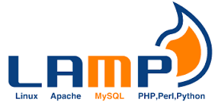
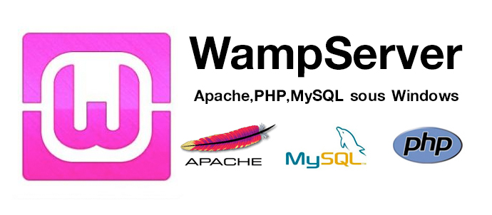

Que es una plataforma web?
Definicion
Tipos de plataformas web
Lamp (Linux, Apache, Mysql, [Perl | Python | Php])

LAMP es el acrónimo usado para describir un sistema de infraestructura de internet que usa las siguientes herramientas:
Linux, el sistema operativo; En algunos casos también se refiere a LDAP.
Apache, el servidor web;
MySQL/MariaDB, el gestor de bases de datos;
Perl, PHP, o Python, los lenguajes de programación.
La combinación de estas tecnologías es usada principalmente para definir la infraestructura de un servidor web, utilizando un paradigma de programación para el desarrollo.
A pesar de que el origen de estos programas de código abierto no han sido específicamente diseñado para trabajar entre sí, la combinación se popularizó debido a su bajo coste de adquisición y ubicuidad de sus componentes (ya que vienen pre-instalados en la mayoría de las distribuciones linux). Cuando son combinados, representan un conjunto de soluciones que soportan servidores de aplicaciones.
Ventajas:
-Disponibilidad y bajos costos.
-Velocidad y mejor tiempo de actividad.
-Los sitios web basados en Linux eran más rápidos que los basados en Windows.
-Es muy fácil colocar instrucciones tanto en nuestro código para activar nuevas funcionalidades del servidor.
-Es la mejor para la implementación y manejo de rescritura e URL.
-Servidor de bases de datos relacional MySQL muy rápido para consultas de lectura y sitios no demasiado grandes.
Desventajas:
-No muy buen rendimiento de MySQL para sitios web demasiado grandes.
-Es muy distinto de Windows, lo que dificulta el trabajo.
Wamp (Windows, Apache, Mysql, [Perl | Python | Php])

Este tipo de plataforma web suele usarse como herramienta de desarrollo por la mayoría de los programadores que tenemos Windows como SO principal y tenemos que desarrollar aplicaciones web en PHP. Es decir, probamos nuestra aplicación PHP en el servidor de desarrollo WAMP y luego subimos la aplicación al servidor LAMP. Existe un software llamado WAMP5 que instala de forma compacta y configura fácilmente toda la plataforma WAMP.
Ventajas:
-Ideal para utilizar como servidor de desarrollo.
-Fácil instalación con el software WAMP5.
Desventajas:
-Puedes tener alguna dificultad a la hora de instalar los subsistemas por separado.
-Puede que siempre se dificulte la instalación de PHP en IIS (Internet Information Server).
Mamp (Mac, Apache, Mysql, [Perl | Python | Php])
El acrónimo MAMP se refiere al conjunto de programas software comúnmente usados para desarrollar sitios web dinámicos sobre sistemas operativos Apple Macintosh, MAC OS X.
Ventajas:
Puedes hacerlo andar y apagarlo con un sólo click para que deje de consumir recursos de tu sistema. Además puedes borrarlo completamente sólo arrastrándolo a la papelera.
Desventajas:
Mayor coste al usuario por parte del equipo de trabajo.
Internet Information Services IIS
Internet Information Services o IIS1 es un servidor web y un conjunto de servicios para el sistema operativo Microsoft Windows. Originalmente era parte del Option Pack para Windows NT. Luego fue integrado en otros sistemas operativos de Microsoft destinados a ofrecer servicios, como Windows 2000 o Windows Server 2003. Windows XP Profesional incluye una versión limitada de IIS. Los servicios que ofrece son: FTP, SMTP, NNTP y HTTP/HTTPS.2
Este servicio convierte a un PC en un servidor web para Internet o una intranet, es decir que en los ordenadores que tienen este servicio instalado se pueden publicar páginas web tanto local como remotamente.
Se basa en varios módulos que le dan capacidad para procesar distintos tipos de páginas. Por ejemplo, Microsoft incluye los de Active Server Pages (ASP) y ASP.NET. También pueden ser incluidos los de otros fabricantes, como PHP3 o Perl.
|